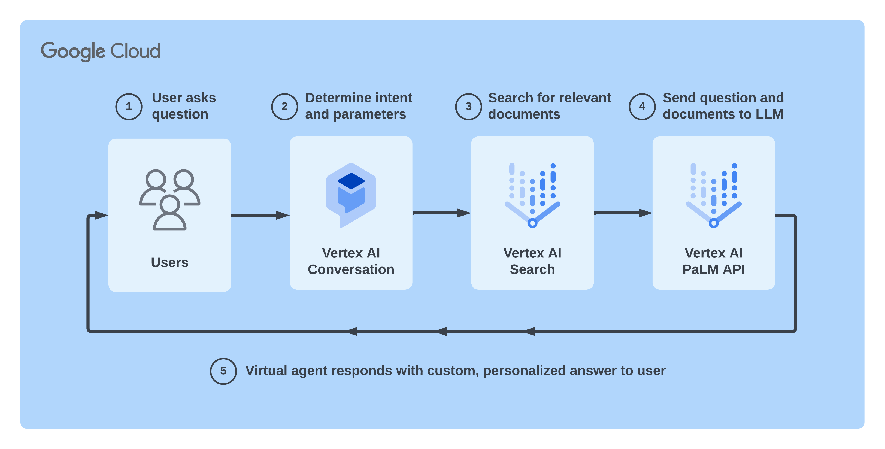

A generative + conversational AI feature within Vertex AI Conversation and Dialogflow CX.
You provide a website, unstructured data, or structured data, then Data Store Agent indexes your content and creates a virtual agent that is powered by large language models. Users can then chat, ask questions, and have a conversation about the content.
Ask the chatbot below about services like, How to get a digital driver license? How to apply for hot water rebate?
